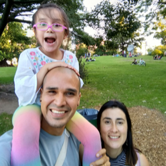
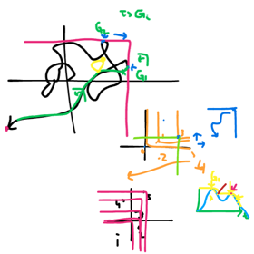
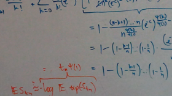
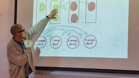
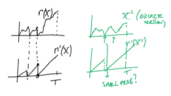

Assistant Professor
Universidad Adolfo Ibanez, Vina del Mar campus
Office A-225, Av. Padre Hurtado 750, Vina del Mar, Chile
Contact: guido dot lagos at uai dot cl
Phone+Whatsapp: +56 9 8367 8158
Other profiles: Google Scholar, LinkedIn, ResearchGate
I'm an Assistant Professor at the Faculty of Engineering of Sciences of Universidad Adolfo Ibanez (UAI) at the Vina del Mar campus. My research interests are in Applied Probability for Reliability Modeling, Stochastic Programming, and Computational Probability. I really enjoy programming and playing with computers and gadgets.
Previously, from Mar 2018 to Mar 2021, I was a FONDECYT postdoctoral researcher at the Operations Research group at UAI. Also, from Oct 2018 to Apr 2020, I was an Assistant Researcher at the Industrial Engineering Department of the University of Santiago (USACH), and during all of 2017 I was a postdoc at the Center for Mathematical Modeling, University of Chile.
I have a PhD in Operations Research from Georgia Tech, Atlanta, GA, USA. My advisor was prof. Ton Dieker and broadly speaking our work was about mathematical guarantees for efficiency and accuracy of algorithms that simulate stochastic processes and specific events of them. During 2016 I was a visiting student/research staff at the IEOR department, Columbia University. In the past I worked with Prof. Alexander Shapiro in multi-stage stochastic programming.
I studied Mathematical Engineering (at the time, a Chilean equivalent to a USA Math B.Sc. + Applied Math M.Sc.) at the Mathematical Engineering Dept. of Universidad de Chile, and also have a M.Sc. degree in Operations Management from Industrial Engineering Dept., Universidad de Chile too.
Efficient computation of sub-system means and signatures for black-box reliability systems.
G. Lagos, S. Avila.
General repair policies for reliability systems under simultaneous failures.
C. Reyes, G. Lagos, M. Bravo, S. Avila.
Simple repair policies and decompositions for semi-coherent systems with simultaneous failures. [ArXiv preprint]
G. Lagos, J. Navarro, H. Olivero.
Scheduling of healthcare professionals using Bayesian Optimization. Preprint
F. Jara-Moroni, G. Lagos, R. Lagos, D. Machado, B. Saavedra, T. Torres.
Submitted.
Forecasting Outside the Box: Application-Driven Optimal Pointwise Forecasts for a Class of Two-Stage Stochastic Programs. [ArXiv preprint]
T. Homem-de-Mello, J. Valencia, F. Lagos, G. Lagos (2026).
To appear in Mathematical Programming.
Limiting behavior of mixed coherent systems with Levy-frailty Marshall-Olkin failure times. [DOI] [ArXiv preprint]
J. Barrera, G. Lagos, P. Romero, J. Valencia (2024).
In journal Applied Stochastic Models for Business and Industry.
Solving Constrained Consumption-Investment Problems by Decomposition Algorithms. [DOI]
B.K. Pagnoncelli, T. Homem-de-Mello, G. Lagos, P. Castaneda, J. Garcia (2024).
In journal European Journal of Operations Research.
Constructing branching trees of geostatistical simulations. [DOI]
M. Armstrong, J. Valencia, X. Emery, G. Lagos (2021).
In journal Mathematical Geosciences.
Adaptive Open-pit Mining Planning under Geological Uncertainty. [DOI]
M. Armstrong, X. Emery, T. Homem-de-Melo, G. Lagos, T. Lagos, D. Saure (2020).
In journal Resources Policy.
A framework for adaptive open-pit mining planning under geological uncertainty. [DOI]
M. Armstrong, T. Homem-de-Melo, G. Lagos, T. Lagos, D. Saure (2020).
In journal Optimization and Engineering.
Limit distributions of the upper order statistics for the conditionally-iid Marshall-Olkin distribution. [DOI] [ArXiv preprint]
J. Barrera and G. Lagos (2020).
In journal Extremes, 23, pp. 603-628.
On the Euler discretization error of Brownian motion about random times. [ArXiv preprint] [winner of the 2017 APS Student Paper Competition; see here]
A.B. Dieker and G. Lagos (2017).
Submitted.
A Dichotomy for Sampling Barrier-Crossing Events of Random Walks with Regularly Varying Tails. [DOI] [ArXiv preprint]
A.B. Dieker and G. Lagos (2016).
In journal Journal of Applied Probability, Vol 54(4) pp. 1213-1232, December 2017.
Restricted risk measures and robust optimization. [DOI]
G. Lagos, D. Espinoza, E. Moreno and J. P. Vielma (2014).
In journal European Journal of Operations Research, 241, pp. 771-782.
Approximations for the Levy-frailty Marshall-Olkin order statistics. [DOI]
J. Barrera and G. Lagos (2020).
Winter Simulation Conference 2020; December 13-16 Orlando, FL, USA.
On the Reliability of Dynamic Stochastic Binary Systems. [DOI]
G. Lagos and P. Romero (2020).
6th International Conference on Machine Learning, Optimization, and Data Science (LOD 2020); July 19-23, 2020, Tuscany, Italy.
Risk averse approaches in open-pit production planning under ore grade uncertainty: a Ultimate Pit study. [Preprint]
D. Espinoza, G. Lagos, E. Moreno and J. P. Vielma (2013).
Proceedings of the 36th International Symposium on Application of Computers and Operations Research in The Mineral Industry (APCOM 2013).
Robust Planning for an Open-Pit Mining Problem under Ore-Grade Uncertainty. [DOI]
G. Lagos, D. Espinoza, E. Moreno and J. Amaya (2011).
Electronic Notes in Discrete Mathematics, 37, 15-20.
Accuracy and efficiency of barrier-hitting and extreme event simulation.
Ph.D. thesis (2017).
Advisor: Ton Dieker
Estudio de metodos de optimizacion robusta para el problema de planificacion de produccion en mineria a cielo abierto.
M.Sc. thesis (2011).
Advisors: Daniel Espinoza and Eduardo Moreno
Co-investigator in FONDECYT Regular grant with project # 1231207, ANID Chile. Apr 2023-Mar 2027.
Principal investigator in FONDECYT de Iniciacion en Investigation grant with project # 11230256, ANID Chile. Funds my research activities over the period Mar 2023-Mar 2026.
Principal investigator in FONDECYT Postdoctoral Research grant with project # 3180767, CONICYT Chile. It funded my research activities over the period Mar 2018-Mar 2021.
Best Student Paper Award of the INFORMS Applied Probability Society, October 2017. For my paper on discretization of Brownian motion. The authors of the three other finalist papers were Zhengyuan Zhou of Stanford, Andrew Li of MIT, and Thodoris Lykouris and Daniel Freund of Cornell.
Algorithms & Randomness Center (ARC) Student Fellowship, Georgia Tech, Fall 2014.
Kiplinger Fellowship, Georgia Tech, August 2011 and August 2012.
Becas Chile-CONICYT Ph.D. abroad scholarship, Chile, November 2010.
Simple v/s non-simple repair policies for coherent systems with simultaneous failures
Asia-Pacific International Symposium on Advanced Reliability and Maintenance Modeling (APARM) 2024 (Nagoya, Japan, August 2024) // INFORMS Annual Meeting 2024 (Seattle, WA, USA, October 2024) // Reliability and Maintainability Lab Seminar, University of Electro-Communications (Tokyo, Japan, February 2025) // Symposium on Games and Decisions in Reliability and Risk (GDRR 8) (Bocconi University, Milan, Italy, May 2025) // International Conference on Mathematical Methods in Reliability (MMR 2025) (Universidad Adolfo Ibanez, Vina del Mar, Chile, June 2025) // International Conference on Reliability, Maintainability and Safety (ICRMS 2025) (Shanghai University, Shanghai, China, July 2025)
System reliability and approximations of the Levy-frailty Marshall-Olkin distribution
Winter Simulation Conference 2020 (virtual meeting, December 2020) // International Conference on Mathematical Methods in Reliability (MMR 2023), Universidad de Murcia (Spain, May 2023) // Applied Probability Society Conference 2023 (Nancy, France, June 2023) // USACH MCI Workshop (Santiago, Chile, December 2023)
Systemc risk and network reliability: asymptotic analysis and confidence bounds
INFORMS Applied Probability Society Conference (Brisbane, Australia, July 2019) // 2019 Reliability and Resiliency in Network Infrastructure Workshop (Santiago, Chile, January 2019) // Science Park Informal Probability Seminar at Centrum Wiskunde & Informatica (CWI) (Amsterdam, The Netherlands, December 2018) // Industrial & Systems Engineering Seminar, Industrial Engineering Department, University of Santiago (Chile, November 2018) // INFORMS Annual Meeting 2018 (Phoenix, AZ, USA, November 2018) // Seminario Instituto de Ingenieria Matematica y Computational (IMC), Pontificia Universidad Catolica (PUC) (Chile, August 2018) // Seminario de Ingenieria Industrial e Investigacion de Operaciones (DIIIO), Universidad Adolfo Ibanez (Chile, July 2018) // Seminario Instituto de Sistemas Complejos de Ingenieria (ISCI), Universidad de Chile (Chile, July 2018)
Limit distributions and random walk approximations
Seminario Depto. de Ingenieria Matematica, Universidad Tecnica Federico Santa Maria (UTFSM) (Chile, May 2018) // Seminario Depto. de Ingenieria Industrial, Universidad de Concepcion (Chile, December 2017) // XII Chilean conference on Operations Research (OPTIMA 2017) (Universidad Adolfo Ibanez, Chile, November 2017) // Science Park Informal Probability Seminar at Centrum Wiskunde & Informatica (CWI) (Amsterdam, The Netherlands, November 2017) // 2017 INFORMS Annual Meeting (Houston, TX, USA; October 2017) // Institute for Math, Universidad de Valparaiso (Chile, July 2017) // Industrial Engineering and Operations Research (IEOR) Seminar, Universidad Adolfo Ibanez (Chile, April 2017) // Seminario Stochastic Models of Complex and Disordered Systems (MESCD) at the Center for Mathematical Modeling, Universidad de Chile (Chile, March 2017) // INFORMS Applied Probability Society Conference (Chicago, IL, USA; July 2017) [pdf] [gif] // "Applied Probability for Lunch--OR PIC" Seminar at IBM TJ Watson Research Center (Yorktown Heights, NY, USA; November 2016)
Sampling rare events of random walks with regularly varying increments: a dichotomy
2014 INFORMS Annual Meeting (San Francisco, CA, USA; November 2014) [pdf]
An introduction to Stochastic Dual Dynamic Programming (SDDP) method for multi-stage stochastic programming
Part of a presentation with Wajdi Tekaya for the course ISyE 8813 Stochastic programming, prof. Shabbir Ahmed, 2011 [pdf]
Risk-averse open-pit mining production planning
2012 INFORMS Annual Meeting (Phoenix, AZ, USA; October 2012) [pdf] // AGCO seminar, DII, Universidad de Chile, 2011 [pdf] // ALIO-INFORMS Joint International Meeting 2010, Argentina
Chief co-organizer, "13th International Conference on Mathematical Methods in Reliability" (June 2025; Vina del Mar, Chile)
Workshop co-organizer, "Reliability and Resiliency in Network Infrastructure: Simulation, Optimization & Analysis" (January 2019; Santiago, Chile)
Session organizer at the INFORMS Annual Meeting 2018 conference, in the Applied Probability Society track (November 2018; Phoenix, AZ, USA)
Seminar/reading group organizer: Seminario DIIIO, Universidad Adolfo Ibanez // Industrial & Systems Engineering Seminar, Industrial Engineering Department, University of Santiago (2018-) // Data Sciences Reading Group at Universidad Adolfo Ibanez (2017-2018) // Student Applied Proability Seminar, at Columbia University on 2016 and at Georgia Tech on 2014-2015.
Reviewer: IEEE Transactions in Reliability, Journal of Applied Probability, Operations Research, Stochastic Models, Annals of Operations Research, PLOS One
2026 (expected)
2025
2024
2023
2022
ISyE 3232 Stochastic manufacturing and service systems (Georgia Tech; Spring 2015)
Graduate Teaching Assistant:
Last modified: Tue Jan 13th, 2026 // Made using Markdown
![[gif]](pubs/APS2017.gif){kind=link}